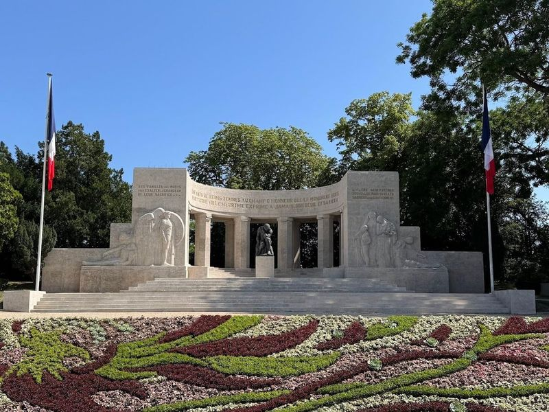
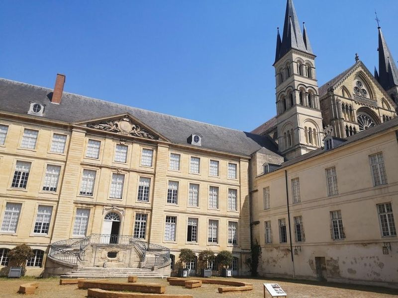
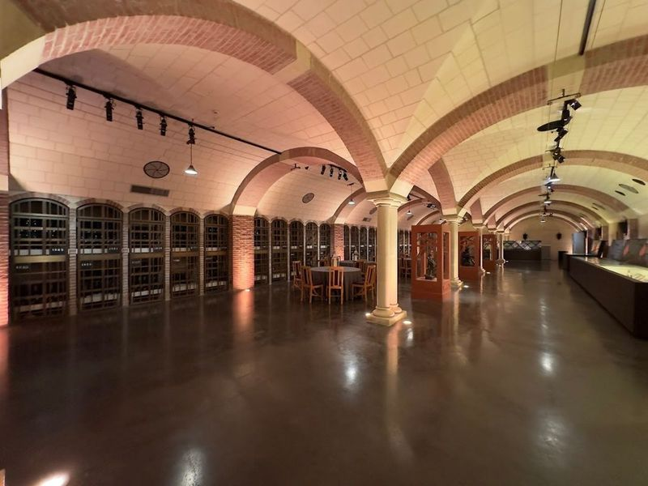
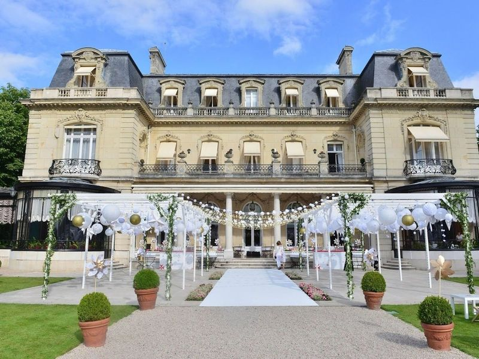
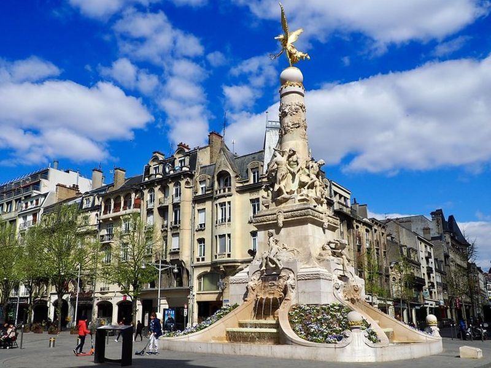
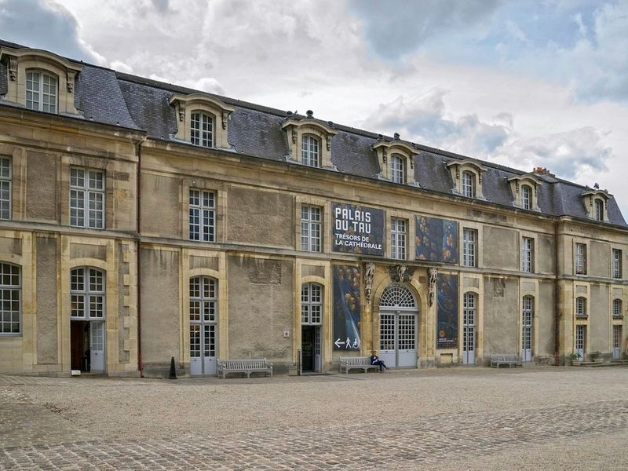
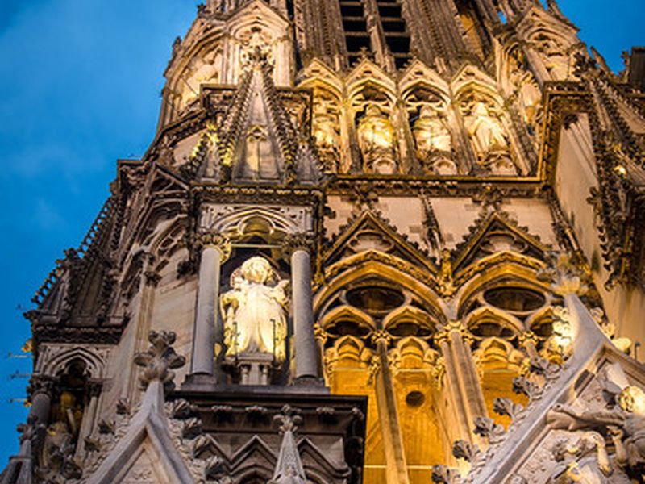
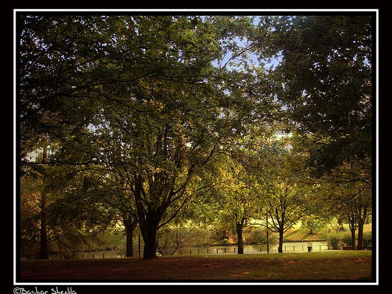
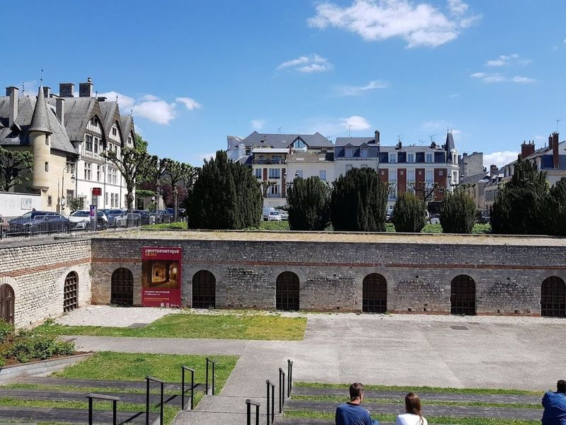
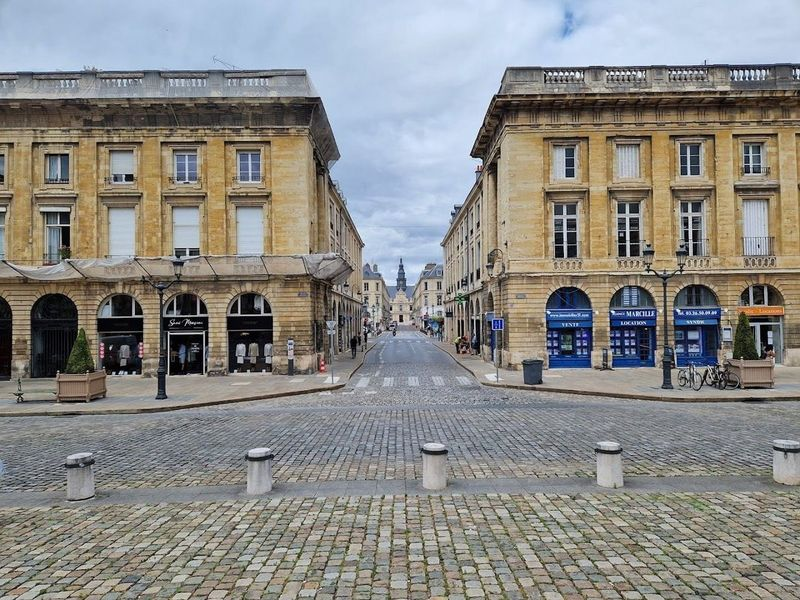

Explore Reims
A Brief History
Reims was the traditional coronation city of French kings from Clovis's baptism in the fifth century through Charles IX in 1825, with the cathedral's sculpted façade celebrating that ritual. Roman Durocortorum lay on the road between Paris and the Rhine, while medieval champagne trade later enriched merchants' houses and cellars in the surrounding plain. First World War bombardment scarred the city, but restored monuments and Art Deco public buildings record Reims's place in French monarchy, industry, and twentieth-century reconstruction.
Attractions Map
Top Sights & Activities

Porte de Mars
La Porte de Mars is a attraction in Reims, offering travellers the chance to marvel at the remains of the widest arch in the Roman world. Situated in a park adorned with colorful flowers, this ancient triumphal arch is not only historically significant but also free to visit. Serving as the city's gateway for many years, it still holds its prestigious position next to Reims' train station.

Basilique Saint-Remi
Basilique Saint-Remi is a medieval church that forms part of a UNESCO World Heritage Site and houses an abbey-museum as well as the tomb of St. Rémi. The basilica, consecrated in 1049, features stained glass dating back to the 12th century. Built in the Romanesque-Gothic style in the eleventh century, it offers travellers a journey through time.

Villa Demoiselle
Villa Demoiselle is a mansion located in Reims, built at the turn of the 20th century with a captivating blend of art nouveau and art deco styles. After being neglected for years, it was meticulously restored in 2004 to its original Belle Epoque grandeur by Paul-Francois Vranken, the Chairman of Champagnes Vranken.

Domaine Les Crayères
Domaine Les Crayères is a luxurious estate featuring elegant accommodations in a mansion. The property boasts an upscale restaurant, Le Parc, where guests can savor exquisite gastronomy crafted by renowned chef Philippe Mille. Additionally, the casual brasserie, Le Jardin, offers a more relaxed dining experience. The estate also prides itself on its talented culinary team, including pastry chef Yoann Normand and Japanese chef Kazuyuki Tanaka.

Place Drouet d'Erlon
A lively square in the heart of Reims, filled with restaurants, cafes, and shops, used for a leisurely stroll or a meal. The site is catalogued as a square. The site is catalogued as a square. The site is catalogued as a square. Place Drouet d'Erlon is listed among principal sites for Reims within France.

Palais du Tau
The Palais du Tau, a UNESCO World Heritage Site, was once the lavish residence of archbishops and later served as a venue for French princes' pre-coronation stays and post-coronation banquets. Now a museum, it showcases an exceptional collection of statuary, liturgical objects, and tapestries from the cathedral. The building itself is a example of medieval architecture with Gothic and Renaissance influences.

Cathedral of Notre-Dame of Reims
A Gothic cathedral known for its stained glass windows and as the traditional site for the coronation of French kings. The site is catalogued as a church. The site is catalogued as a church. The site is catalogued as a church. Cathedral of Notre-Dame of Reims is listed among principal sites for Reims within France.

Parc Léo Lagrange
A large park offering green spaces, walking paths, and recreational facilities, ideal for relaxation and outdoor activities. The site is catalogued as a tourist attraction. The site is catalogued as a tourist attraction. The site is catalogued as a tourist attraction.

Cryptoportique
In Reims, France, travellers can explore the Cryptoportique, a historical site with a Gallo-Roman origin. This below-street-level structure is believed to have functioned as a grain storage facility in the 3rd century AD and is considered -preserved of its kind. Today, it serves as an al fresco dining terrace and concert venue. The eastern part of the Cryptoportique remains intact and offers displays of objects found at the site.

Place Royale
Place Royale is a city square in Reims, surrounded by picturesque buildings and featuring a monument to Louis XV at its center. The square is adorned with grand arcaded structures and a bronze statue of King Louis XV. Nearby attractions include the Gallo-Roman Cryptoportique, the Porte de Mars, Saint-Remi Basilica, and Villa Demoiselle.